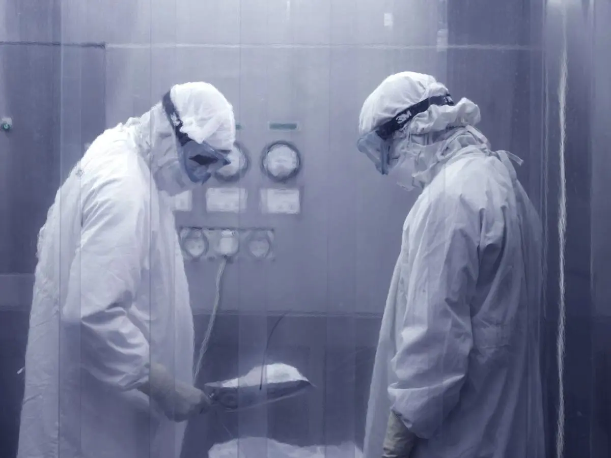
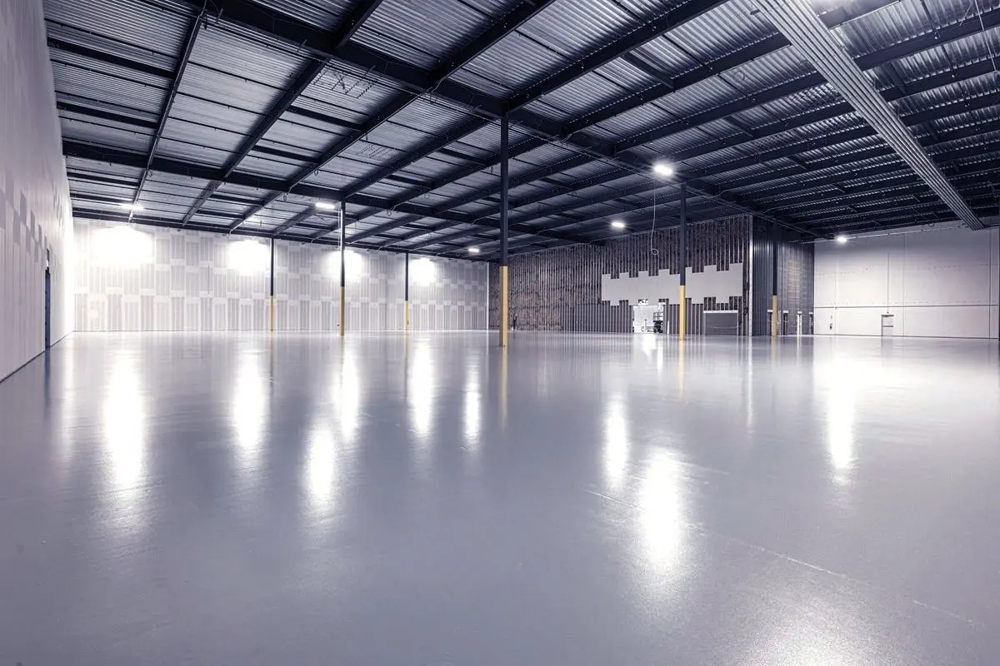

Modality 01
Process name
Typical products · materials · packaging
Links to
/services/[slug]Contract sterilization · [[CITY]], India
Outsourcing a critical-path process means trusting someone else's paperwork. Every batch we release carries its cycle record, indicator results and certificate — assembled the way your quality system expects to receive it.
Certifications
Years operating
Batches released
Devices sterilized
What we sterilize
Modality, material compatibility and typical product classes go here, one card per process we operate. The card count follows the answer — a single-modality facility gets a different treatment than four.
Blocked · context §1.1Modality 01
/services/[slug]Modality 02
/services/[slug]Modality 03
/services/[slug]How it works
Handing over a critical-path step is the objection we hear first. The answer is not reassurance, it is visibility — you know where the load is and what document closes each stage.
01
You send the device, material and packaging. We confirm compatibility and whether an existing validation covers it before quoting.
02
Collection from your site, goods-in check against the manifest, then conditioning to the temperature and humidity the cycle requires.
03
The load runs on a documented cycle with indicators placed to the validated positions. Parameters are recorded throughout.
04
Nothing ships on assumption. Indicator results are read and the batch is released with its cycle record and certificate attached.

PlaceholderQuality & compliance
A certificate you cannot verify is a logo. Each one carries its issuing body, its number and its validity window, because the only version of this section worth publishing is the checkable one.

PlaceholderValidation and routine control of the EO process
Medical device QMS, scope as certified
Central Drugs Standard Control Organisation
Standards listed are the ones this business would be expected to hold. Confirm which are actually certified, with numbers and validity dates, before publication.
Industries served
A device manufacturer worries about their regulatory filing. A hospital worries about turnaround. The pages are written separately because the questions are not the same.
Validation evidence that survives a notified-body audit and a CDSCO inspection.
View sectorOverflow and outsourced capacity when the department cannot absorb the load.
View sectorConsumables, components and labware where bioburden control is the constraint.
View sectorDocumentation packaged for FDA and CE expectations, not just for domestic filing.
View sectorFacility
Procurement buyers put these numbers into an internal approval deck. Chamber capacity, cleanroom class, aeration and quarantine, stated plainly.
Blocked · context §1.3Chambers
Capacity per cycle
Cleanroom class
Aeration capacity
Insights
There is very little good Indian-market writing in this niche. That gap is the cheapest competitive advantage available to us.
All insightsCommon questions
Three more depend on answers we do not have yet — turnaround, certifications held, and whether testing is in-house. Three honest answers beat six evasive ones.
In three documented stages. Installation qualification confirms the equipment is installed and operating to specification. Operational qualification establishes that the cycle delivers its parameters across the working range. Performance qualification demonstrates, with biological indicators in the hardest-to-reach positions of a real load, that the process achieves the required sterility assurance level. All three are re-established after any significant change to equipment, load configuration or packaging.
A cycle designed so that half of its dwell time already achieves complete kill of a resistant biological indicator. The production cycle then runs double that exposure, which delivers a very large safety margin without needing to characterise the product's natural bioburden first. It is conservative by design — simpler to validate and defend, at the cost of a longer cycle and more process exposure for the device. Bioburden-based cycle design is the alternative where material sensitivity makes that trade unattractive.
At minimum the cycle record showing achieved parameters against the validated set points, the indicator results for that specific load, and a certificate of sterilization identifying the batch and the cycle applied. Traceability runs from your delivery manifest through to that certificate, so an auditor can follow one device back to one cycle. The exact document set Medelis issues needs confirming — context §1.
Request a quote
The form is longer than most. That is deliberate — it means the first reply you get is a quote rather than a request for a discovery call.
[[PHONE]] · [[WHATSAPP]] · [[EMAIL]]